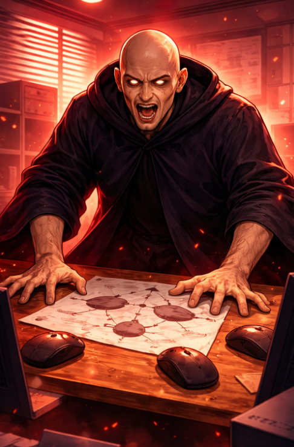

Martedì 17 marzo 2026
Nel pomeriggio è successa una cosa che non avevo previsto nel mio bilancio della giornata.
E devo dire che, considerando tutto quello che ho vissuto ultimamente — notti insonni, trappole psicologiche, piani di conquista aziendale — non pensavo che qualcosa potesse ancora sorprendermi.
Mi sbagliavo.
Tutto è iniziato con una mail.
Non l'ho letta direttamente, ovviamente. Sono un seme in un bicchiere, non ho accesso alla posta aziendale. Ma le notizie viaggiano, in un ufficio. Viaggiano nell'aria, nelle pause caffè, nelle occhiate scambiate tra colleghi sopra i monitor. E le mie foglioline, ormai calibrate come antenne di precisione, captano tutto.
La mail era di Albucaos.
Indirizzata all'ufficio IT.
Oggetto: Richiesta urgente e improrogabile di dispositivo di puntamento ottico — priorità massima.
Albucaos richiedeva formalmente la fornitura di tre mouse.
Non uno. Tre.
Produttività bilaterale.
Le mie foglioline si sono piegate di almeno venti gradi.
La risposta dell’IT arrivò in quattro minuti.
No.
Alle 14:38 Albucaos era già in piedi.
Entrò nell’ufficio IT come un errore di sistema.
— Ho ricevuto la vostra risposta
— Sì
— Non va bene
— Ho bisogno di tre mouse
Pausa.
— Per una postazione?
— Per le mie esigenze operative
Estrasse un foglio.
Uno schema.
Tre cerchi.
Frecce.
Un sistema.
Uno per la mano sinistra.
Uno per la destra.
Uno per il gomito.
Con il gomito.
— Non è ergonomico
— È un sistema
— Due, allora
— Neanche
— Uno e mezzo?
Silenzio assoluto.
Nel corridoio si era formata una folla.
Simone. Giulia. Michela. Sandra.
E io.
— Volete sapere perché?
— Perché il lavoro non aspetta!
— Tre giorni senza mouse!
— Immobilità operativa!
— È una proposta di buonsenso!
Silenzio.
— La risposta è no
Fine.
Albucaos uscì.
Ci guardò.
— La questione non è chiusa
Se ne andò.
Tre secondi di silenzio.
Poi Giulia scoppiò a ridere.
Tutti la seguirono.
Perfino Sandra.
Ho mosso entrambe le foglioline.
Quella sera ho capito una cosa.
Albucaos è pericoloso.
Ma oggi ha perso.
Contro due tecnici IT.
E la burocrazia.
E la burocrazia è democratica.
— Guacamino 🥑
← Giorno 34 Giorno 36 →